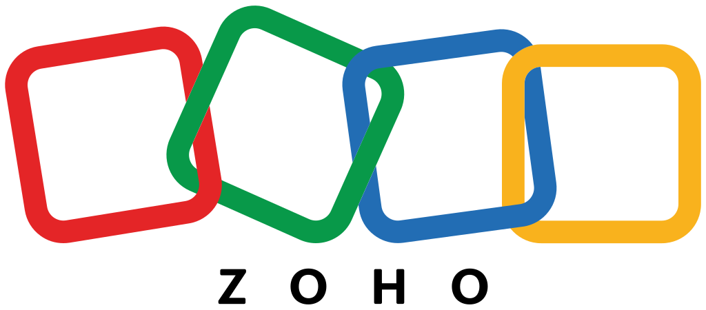
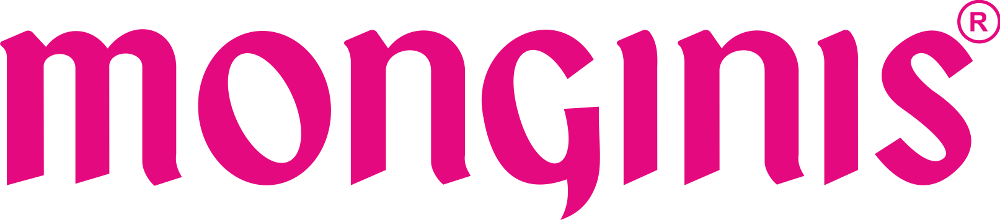
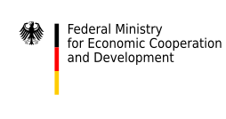
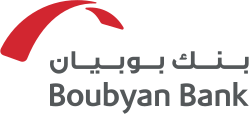

A one-person product studio · Egypt · Since 2017
One problem
at a time.
Small tools for problems people face alone. Pan means everything. X is the problem on your desk today.
Eight problems, so far
2017 → now- 2026 Tafadal Visitors ask the same five questions at 3 a.m. A chat bubble that answers from your own text, in the visitor's own language. Live
- 2025 Badge wall Free directories now want a badge and a backlink before they list you. One ready-made badge section a founder drops on their site, covering every directory on ToolSeekr. Live on ToolSeekr
- 2024 ToolSeekr Finding business software meant reading English review sites. A curated directory in English and Arabic, built with indie makers. Thousands of tools listed
- 2022 Xposure A chain loses track of its branches on Google Maps. One place to manage every location's listings and reviews, in ten languages. Retired, site still up
- 2020 awesome-certificates Free courses are everywhere. Certificates cost money. An open list of free courses that come with one, kept by the community. Nearly 6,000 stars on GitHub
- 2019 Hunt Every country had its own job boards. One free search engine over all of them, on panx.io. 8 countries, 15,000 users at its peak
- 2018 HireUps A CV shows nothing about skill. Hiring meetups where vetted candidates solve a challenge in front of three to five hiring managers and get feedback the same day. First event: 15 designers, 3 employers
- 2017 PanX begins Started in the UK as a consultancy. Six years of client work paid for everything above.
Clients




Banks, ministries, agencies and startups, from Cairo and Dubai to Berlin, Paris and Sydney.
About
PanX is one person. I started it in the UK in 2017 and ran it as a consultancy for six years, for banks, ministries and startups on three continents.
More than once, a client's problem turned out to be everyone's problem, and a tool came out of it: a hiring format, a job search engine, a listings manager. That is the whole method now. Pick one problem people face alone, build the smallest tool that removes it, ship it, say what happened.
I work from Egypt, in public. If you run something alone and keep hitting the same wall, write to me.
Waleed Sadek, founder